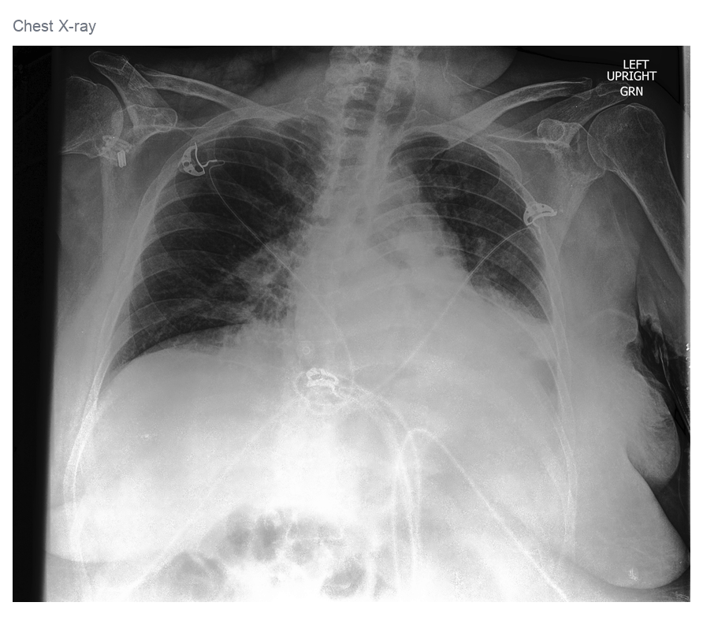
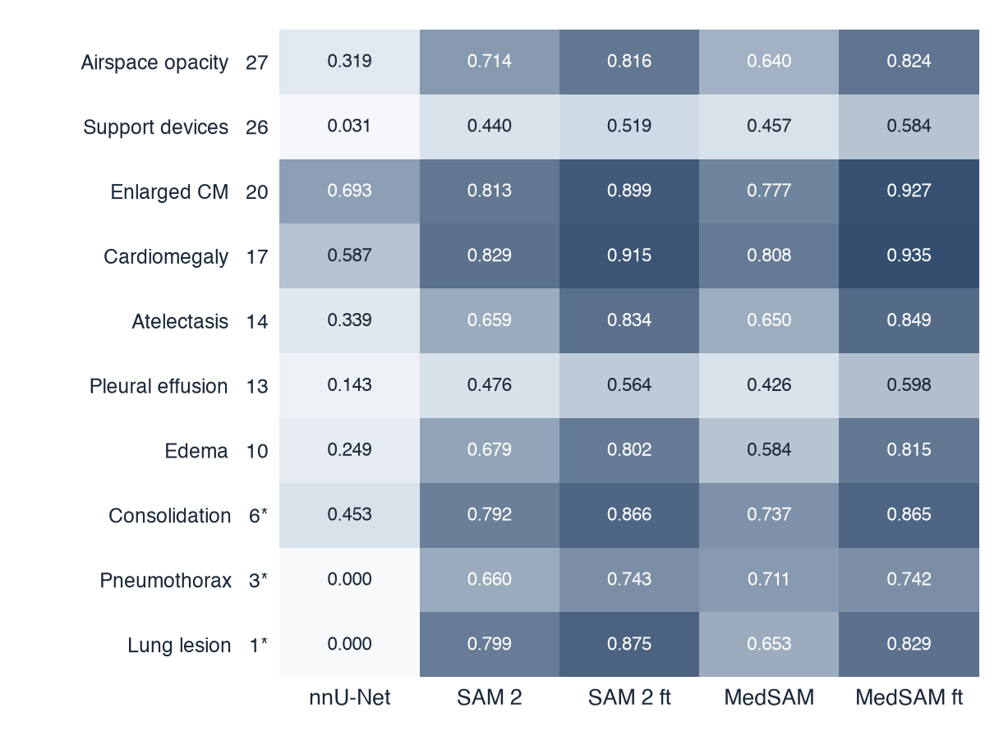
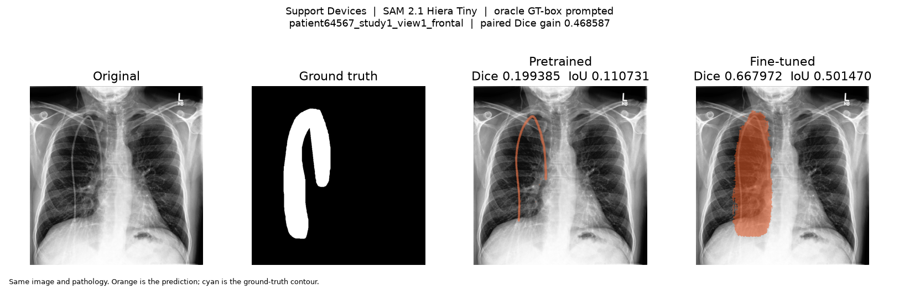
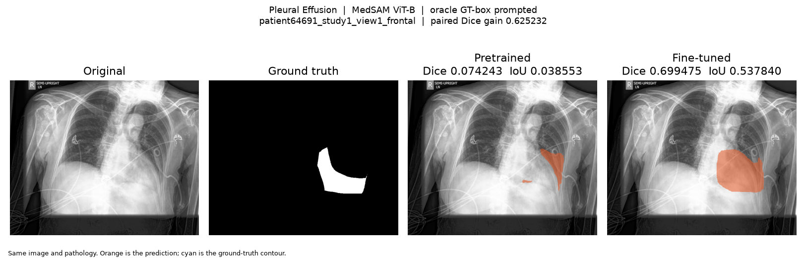
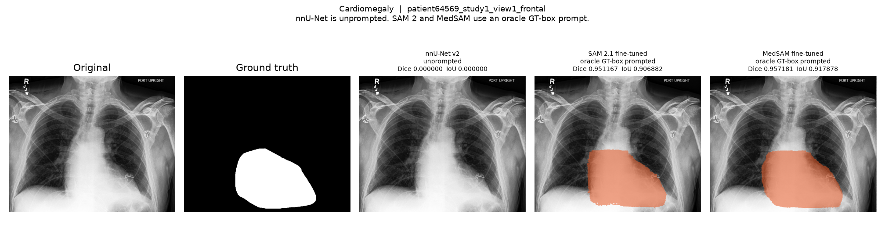

CheXlocalize: Multi-Pathology Chest X-Ray Segmentation
A reproducible chest X-ray segmentation study evaluating nnU-Net [2], SAM 2.1 [3], and MedSAM [4] across 10 radiologist-annotated pathologies from CheXlocalize [1]. The primary question is whether task-specific fine-tuning improves prompt-based foundation models for medical image segmentation.

Research Question
How much does task-specific fine-tuning improve SAM 2 [3] and MedSAM [4] for chest X-ray pathology segmentation when approximate pathology location is provided?
To provide a separate end-to-end reference, I also trained a 10-pathology nnU-Net v2 [2] model that receives only the chest X-ray and must localize and segment findings without a bounding-box prompt.
Because nnU-Net is unprompted while SAM 2 and MedSAM receive ground-truth-derived bounding boxes, their absolute scores represent different inference settings and should not be interpreted as a pure architecture leaderboard.
Experimental Design
The project uses CheXlocalize [1], which provides radiologist localization annotations for findings on CheXpert [5] chest radiographs.
Ten segmentation targets were modeled:
Atelectasis · Cardiomegaly · Consolidation · Edema · Enlarged Cardiomediastinum · Lung Lesion · Airspace Opacity · Pleural Effusion · Pneumothorax · Support Devices
Why this design?
Patient-level splitting. Training and internal-validation sets were separated by patient rather than image to prevent multiple studies from the same patient from appearing across both sets.
Multi-label segmentation. Pathology masks can spatially overlap. Each finding was therefore represented as an independent binary segmentation target rather than forcing pixels into mutually exclusive classes.
Positive-only headline evaluation. Headline Dice and IoU metrics use cases with a non-empty localization mask. This prevents large numbers of correctly empty predictions from artificially increasing segmentation performance.
Oracle-box prompting. SAM 2 and MedSAM receive a tight bounding box derived from the ground-truth mask. This intentionally isolates segmentation performance given localization from the separate problem of automatically detecting where a pathology is located.
Controlled pretrained vs. fine-tuned comparisons. Pretrained and fine-tuned versions of each foundation model are evaluated on the exact same image–pathology pairs using the same prompting and scoring pipeline.
Models
nnU-Net v2 — Unprompted baseline
nnU-Net [2] receives the chest X-ray directly and predicts the pathology segmentation masks without localization prompts.
This represents the more difficult end-to-end setting in which the model must both identify where a finding is located and delineate its extent.
SAM 2.1 Hiera Tiny
SAM 2 [3] is evaluated in two conditions:
- Pretrained: original model weights
- Fine-tuned: model adapted using the CheXlocalize training split
Both conditions receive the same ground-truth-derived bounding-box prompts.
MedSAM ViT-B
MedSAM [4] is similarly evaluated before and after task-specific fine-tuning using the same oracle-box prompting protocol.
This enables a controlled test of whether adapting a medical segmentation foundation model to this specific chest X-ray task improves segmentation quality.
Official Test Results
The official test is the primary evaluation. It was scored after the checkpoints and procedures were frozen.
The official test annotations had previously been inspected for dataset-level overlap/schema analysis, but test performance was not used for training, checkpoint selection, thresholds, early stopping, or hyperparameter tuning.
The scored set is 1,534 VALID_POSITIVE pairs, from 499 images and 403 patients. All five conditions scored 1,534 / 1,534 pairs. Intervals use 5,000 resamples and seed 42.
nnU-Net is unprompted. SAM 2 and MedSAM receive oracle ground-truth boxes. These are different inference settings and are not a pure architecture ranking.
| Model | Setting | Mean Dice | 95% CI | Mean IoU | Median Dice |
|---|---|---|---|---|---|
| nnU-Net v2 | Unprompted, epoch 7 | 0.310 | [0.294, 0.326] | 0.234 | 0.162 |
| SAM 2.1 | Pretrained + oracle box | 0.646 | [0.635, 0.657] | 0.512 | 0.703 |
| SAM 2.1 | Fine-tuned, epoch 12 + oracle box | 0.742 | [0.731, 0.753] | 0.630 | 0.826 |
| MedSAM | Pretrained + oracle box | 0.607 | [0.597, 0.618] | 0.467 | 0.644 |
| MedSAM | Fine-tuned, epoch 4 + oracle box | 0.772 | [0.763, 0.781] | 0.664 | 0.850 |
Source: results/test/summary_test_results.csv. Full precision is in results/test/summary_test_results.md.
Internal Validation
Internal validation was used to choose checkpoints. It is a development result, not the headline.
The same five conditions were scored on 137 VALID_POSITIVE pairs.
| Model | Setting | Mean Dice | 95% CI | Mean IoU |
|---|---|---|---|---|
| nnU-Net v2 | Unprompted supervised | 0.329 | [0.273, 0.386] | 0.252 |
| SAM 2.1 | Pretrained + oracle box | 0.663 | [0.624, 0.699] | 0.531 |
| SAM 2.1 | Fine-tuned + oracle box | 0.762 | [0.724, 0.798] | 0.655 |
| MedSAM | Pretrained + oracle box | 0.629 | [0.593, 0.662] | 0.488 |
| MedSAM | Fine-tuned + oracle box | 0.788 | [0.752, 0.821] | 0.687 |
Internal validation compared with the official test:
- nnU-Net: 0.329 → 0.310
- SAM 2 pretrained: 0.663 → 0.646
- SAM 2 fine-tuned: 0.762 → 0.742
- MedSAM pretrained: 0.629 → 0.607
- MedSAM fine-tuned: 0.788 → 0.772
Every model dropped only about 0.015–0.021 Dice. The fine-tuning gains remained similar on the official test set.
Fine-Tuning Gains
On the official test, within each prompted model:
- SAM 2.1: +0.096 Dice, 95% CI [0.091, 0.102]
- MedSAM: +0.165 Dice, 95% CI [0.158, 0.172]
Neither paired interval includes zero. Source: results/test/test_finetuning_improvements.csv.
On internal validation the same comparison was SAM 2 +0.099 [0.082, 0.118] and MedSAM +0.159 [0.137, 0.182].
Per-Pathology Results
Official-test mean Dice was not uniform. Counts below are the same for every model. Source: results/test/test_per_pathology_results.csv.
Cardiomegaly (n=175) and Enlarged Cardiomediastinum (n=297) were comparatively strong. Fine-tuned mean Dice was 0.914 and 0.904 for SAM 2, and 0.920 and 0.914 for MedSAM.
Pleural Effusion (n=120) and Support Devices (n=314) were harder, especially for unprompted nnU-Net (mean Dice 0.134 and 0.030).
Fine-tuning raised mean Dice for every pathology in SAM 2. It raised mean Dice for nine MedSAM pathologies. MedSAM Pneumothorax (n=10) moved from 0.645 to 0.595.
Pneumothorax (n=10) and Lung Lesion (n=14) are the smallest official-test groups. Unprompted nnU-Net mean Dice was 0.000 on both.
The heatmap below is the internal-validation set, where Consolidation, Pneumothorax, and Lung Lesion had fewer than 10 pairs.

Qualitative Results
The examples below are internal-validation films chosen from the saved scores. They are not official-test cases. Quantitative improvement did not always produce anatomically perfect masks.
Fine-tuning improves coverage
For both SAM 2 and MedSAM, fine-tuned predictions often captured substantially more of the labeled pathology than their pretrained counterparts.


Thin and irregular structures remain difficult
Support devices and small peripheral findings were particularly challenging. In several examples, fine-tuning increased mask coverage while producing shapes that remained more rectangular or box-like than the ground truth.
Localization remains a separate problem
Some findings that were successfully segmented by oracle-prompted SAM 2 or MedSAM were completely missed by the unprompted nnU-Net model.
This highlights an important distinction: providing the approximate location of the pathology substantially changes the segmentation problem.

Full gallery: results/final/qualitative/.
Evaluation
Segmentation performance was measured using:
- Dice coefficient
- Intersection over Union (IoU)
- per-pathology performance
- qualitative prediction analysis
- paired pretrained → fine-tuned comparisons
- 5,000-sample bootstrap confidence intervals, seed 42
Reproducibility and Engineering
The project includes:
- reproducible preprocessing and mask decoding
- patient-level split validation
- overlapping multi-label target generation
- checkpointed model training
- early stopping
- saved per-pair predictions
- harmonized evaluation manifests
- automated Dice/IoU scoring
- per-pathology analysis
- bootstrap uncertainty estimation
- qualitative failure analysis
- GPU training and inference using PyTorch and RunPod
Selected checkpoints:
- nnU-Net: epoch 7
- SAM 2: epoch 12
- MedSAM: epoch 4
python -m venv .venv && source .venv/bin/activate
pip install -r requirements.txt
python scripts/validate_project.py
pytest -q
python scripts/preprocess.py
preprocess.py expects the dataset on disk. Model environments are documented separately: nnU-Net, SAM 2, MedSAM.
Limitations
This project has several important limitations.
Oracle prompting. SAM 2 and MedSAM receive bounding boxes derived from ground-truth masks. Their reported performance therefore measures segmentation given localization, not automatic pathology detection and segmentation.
Different model protocols. nnU-Net receives no localization prompt. Direct numerical comparisons between nnU-Net and the prompted models should therefore not be interpreted as an architecture ranking.
Checkpoint selection. Checkpoints were selected on the internal-validation split. The official test was scored only after that choice was frozen.
Small pathology groups. On the official test, Pneumothorax has 10 positive pairs and Lung Lesion has 14. Several internal-validation pathology groups were smaller still.
Bootstrap dependence. Some evaluated image–pathology pairs come from the same image or patient, so pair-level bootstrap intervals may underestimate dependence.
Clinical use. This project is a research segmentation study and has not been validated for clinical deployment.
Reproducibility note
The first MedSAM pretrained launch on the official test raised NameError: name 'torch' is not defined. It occurred before any pair was scored. The resumed run completed all 1,534 pairs. Weights and thresholds were unchanged.
Tools
Machine learning: PyTorch, nnU-Net v2, SAM 2.1, MedSAM Data: NumPy, pandas, scikit-image, pycocotools Evaluation: Dice, IoU, bootstrap confidence intervals Infrastructure: RunPod A100, Git
The interactive page is frontend/index.html.
Dataset and References
This project uses CheXlocalize [1], which provides radiologist localization annotations on CheXpert [5] chest radiographs.
- Saporta et al. Benchmarking saliency methods for chest X-ray interpretation. Nature Machine Intelligence (2022). 10.1038/s42256-022-00536-x. Dataset: 10.71718/hap9-kn94.
- Isensee et al. nnU-Net: a self-configuring method for deep learning-based biomedical image segmentation. Nature Methods 18, 203–211 (2021). 10.1038/s41592-020-01008-z.
- Ravi et al. SAM 2: Segment Anything in Images and Videos. International Conference on Learning Representations (2025). arXiv:2408.00714.
- Ma et al. Segment anything in medical images. Nature Communications 15, 654 (2024). 10.1038/s41467-024-44824-z.
- Irvin et al. CheXpert: a large chest radiograph dataset with uncertainty labels and expert comparison. AAAI (2019). 10.1609/aaai.v33i01.3301590.
This repository has no LICENSE file. The dataset and model weights keep their own licenses.